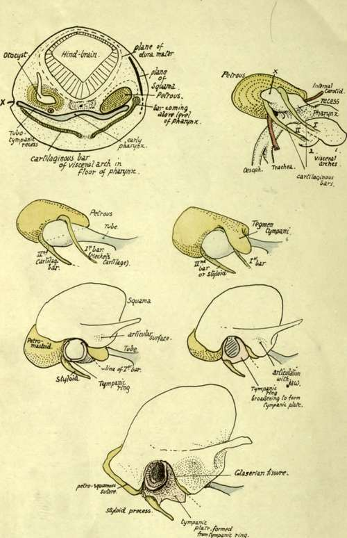

Occipital. Continued
Description
This section is from the book "The Anatomy Of The Human Skeleton", by J. Ernest Frazer. Also available from Amazon: The anatomy of the human skeleton.
Occipital. Continued
The lateral and vertical grooves have tentorium and falx respectively attached to their margins, hence the cerebral hemispheres are in relation with the supraoccipital and the cerebellum with the post-occipital. The falx cerebelli and occipital sinus are on the internal crest. There are marks for cerebral gyri in the upper quadrants, but the cerebellum and cisterna magna cause no marking on the bone, and ridges on this part are due to posterior diploic veins running to the sigmoid sinus, where their terminal openings can be seen.
The superficial convex surface of the tabular portion has (Fig. 171) its most prominent j^art, the external occipital protuberance, a little below its centre. The superior curved lines run out from this to reach the mastoid process : bdow this, on the preoccipital, are a vertical external occipital crest and a transverse inferior rcftrvm line : between them are rough markings made by the thick areolar fasciae round the muscles of the suboccipital region.
The attachments (Fig. 171) are :-
To upper curved line : Trapezius, Splenius, Sternomastoid ; the last two reaching mastoid.
To lower curved line : Fascia separating posterior Recti from Complexus and Superior Oblique.
Between the lines : Complexus and Superior Oblique. To protuberance and median crest-Ligam. nuchae.
There may be a groove for the occipital artery outside the inferior curved line and the area of Superior Oblique.
The occipital artery reaches the base of the skull by crossing the carotid sheath in an upward, outward, and backward direction from its origin from the external carotid on the pharyngeal wall. In so doing, it lies on (see Fig. 22) the internal carotid, hypoglossal, internal jugular, and spinal accessory, and reaches the outer edge of Rectus lateralis, along which it passes to the skull : it is covered by the Digastric. The place where it first touches the skull, therefore, is between the lateral Rectus, on the exoccipital, and the digastric groove on the petro-mastoid-i.e., it is usually to be found as a groove on or by the suture between these two parts of the skull. It now runs upwards, inwards, and backwards, in more or less close association with the occipital (Fig. 171) and round the outer side of the muscles forming the suboccipital triangle : it is covered at first by the mastoid process and its attached muscles, but as it runs back it gets beyond the process and the Digastric, then beyond the Trachelomastoid, and then, beyond the level of the posterior border of the Sternomastoid, is only covered by Splenitis capitis, and makes for the interval between this muscle and the Trapezius. It lies on fibres of Complexus at this interval, then crosses the bone between the upper curved line and linea suprema, to pass on to the Occipito-frontalis. Before reaching the Complexus it gives off its princeps cervicis branch, which thus lies over the suboccipital muscles and can divide into deep and superficial branches in relation with the Complexus.
* Hence frequently termed the " interparietal " part of the bone.
The supraoccipital or part of the bone above the superior curved line is covered by the occipito-frontalis, which is attached to the bone a little distance above the upper curved line on the so-called linea suprema ; the central part of the line is usually better marked because the aponeurosis is fastened here, the muscle fibres arising further out.
The bone between the linea suprema and linea superior is crossed by the occipital artery as it runs up to lie on the aponeurosis after emerging from between Trapezius and Splenius (Fig. 171) : this part of the bone is sometimes prominently bulged, being then known as the torus occipitalis transversus.
The blunt prominence of the external protuberance is easily felt from the surface, and the bone can be easily palpated through the movable scalp above this level: the apex of the lambdoid suture is about z\ inches above the prominence. Below this level, however, the bone is deeply covered by the thick muscles of the neck and cannot be felt. As might be expected from the absence of connection between the factors responsible for them, the outer and inner prominences do not by any means necessarily correspond in position or level on the bone. This is a fact to be borne in mind when using the outer projection for purposes of locating the deep structures : thus, for example, the lateral sinus may have the surface relations seen in Fig. 168, or may be higher or lower compared with the upper curved line and outer protuberance ; as a rule the groove is well above the level of the superior line.
The front ends of the condyles are in a line joining the middle of the two outer meatuses, but on a lower level. The middle of the foramen magnum is very little behind a line joining the tips of the mastoid processes, but above its level. Observe, moreover, that in the skull in the ordinary position the lower surface of the condyles is about on a level with the hard palate.
Development
The basi-, ex-, and post- occipital are laid down in cartilage, but the supraoccipital is a membrane bone. The basi-occiput begins to ossify first, quickly followed by the post-occipital, in the sixth to seventh week, while the centres for the exoccipital appear about the eighth week. Centres for the basi-occiput are paired, fusing rapidly to form one : in addition an anterior centre has been described, looked on by some as an epiphysis-on the bone. Each exoccipital has a single centre. For the cartilaginous part of the post-occipital two or four centres are described, while for the upper membranous part four centres appear to be the rule, appearing first about the beginning of the third month. Of the four membranous centres the two lower are termed the interparietal and the smaller upper ones the preinterparietals. At birth the bone is in four pieces (see Fig. 214). The tabular and exoccipital parts unite in the third year, and the basal portion joins a year or two later. Looking at the figure it is seen that the exoccipitals form the greatest part of the margin of the foramen, the other elements of the bone only contributing a small piece each in front and behind : the hinder end of the margin may, however, have a separate small centre constituting the " ossicle of Kerckring".
Fig. 172.-Schemes to illustrate development of temporal bone.
Continue to:
- prev: Occipital
- Table of Contents
- next: Temporal